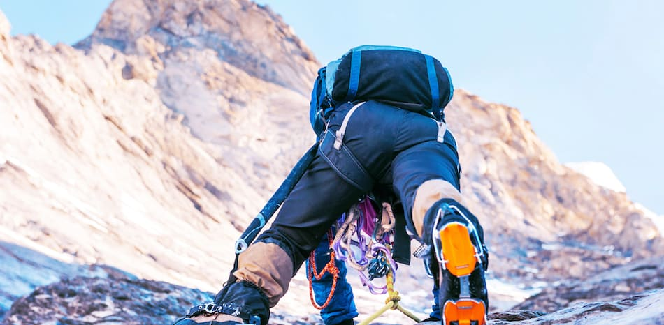
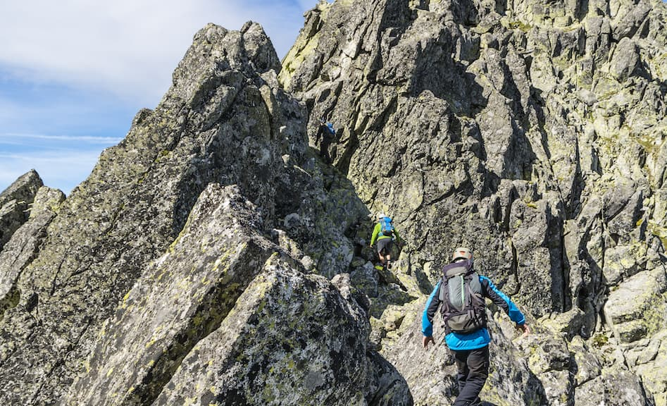
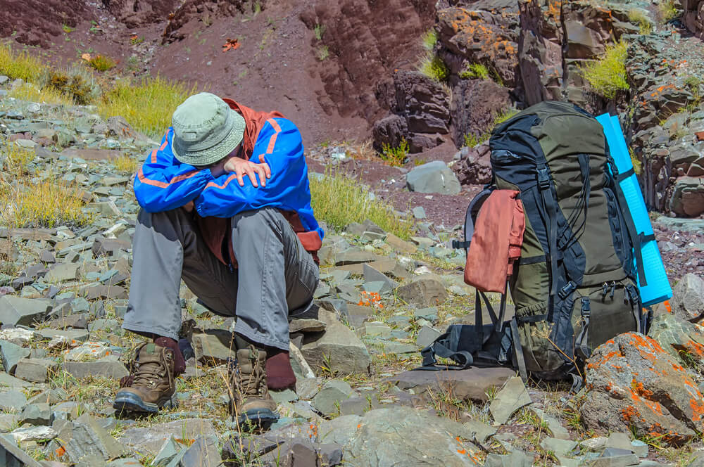

Mountain climbing is an inherently dangerous activity, and you need to be aware of the dangers before you go out.
So, what are the main risks in mountain climbing? Falling, avalanche danger, exposure to the elements, and altitude sickness are among the most prevalent risks that you'll face while mountaineering, although that's far from a comprehensive list.
There's a whole host of mountain climbing risks that you'll have to face if you decide to take up this sport. Some of them (like falling and exhaustion) you'll have to content with every time you go mountain climbing, while others (like altitude sickness) will only become relevant once you start pushing the boundaries on some of the hardest mountains in the world. Now, this article isn't meant to dissuade you from mountain climbing (I do it all the time, and I love it), but rather to make you aware of the dangers so that you can plan for them!
What it is: The risk of losing your purchase on the mountain in a steep section and having gravity do the rest.
Why it's dangerous: Above five feet, you might injure yourself in a fall; above 20, there's a very real chance that you could die.
How to avoid it: Strong mental capacity, navigation, and knowing your limits are all important factors to avoid falling. Wearing a helmet can lessen the impact of a fall.
Falling is one of the baseline fears that humans face, and for good reason. A fall from as little as ten feet is enough to suffer a life-changing injury, so this is something you want to avoid at all costs.
Often while mountain climbing you find yourself in 'no-fall zones' — areas where you don't have any protection (ropes, harnesses, etc.) and a fall would result in death. In such situations, it's essential to know that you're within your own personal limits before you enter the no fall zone.
Reading route descriptions, listening to more experienced people, and practicing on easier terrain will all allow you to judge mountains and know if you're good enough to venture into their no-fall zones without pushing yourself too far.
What it is: Massive packs of snow that come loose from mountains and slide down, sometimes for thousands of feet, at almost 100 miles per hour.
Why it's dangerous: Avalanches can bury you alive in snow and then trap you there until you suffocate (that's if they don't crush you to death first).
How to avoid it: There are two steps to avoiding avalanches: proper planning (not venturing into severe avalanche terrain) and proper recovery (having the right tools and partners to dig you out if you ever do get trapped).
Avalanches are one of those uncontrollable risks that you can plan for, but you can't do too much to prevent. Often times they're caused by factors that are completely out of your control, so the only thing for you to do is to try to avoid avalanche terrain at all costs.
Of course, sometimes this isn't possible, and you need to enter avalanche terrain to climb a specific route. In these cases, even the best mountain climbers in the world are unable to prevent tragedy. Alex Lowe, one of the greatest mountaineers of all time, died in a massive unforeseeable avalanche.
What it is: The risk of sudden weather changes (usually in the form of storms), which happen often in the mountains.
Why it's dangerous: Storms can change the conditions you're in, which makes your travelling harder and may expose you to the elements.
How to avoid it: Good planning and preparation are the only way to avoid this danger. You should know the weather report for your specific mountain before you leave the house, and you should always carry one extra layer of clothing on you (and one extra meal in case you get stranded).
Weather risks are mostly related to the chance that you get caught in an unforeseen storm while mountain climbing. This can expose you to the elements (leading to issues like hypothermia) and can make travelling more difficult (if you crossed a narrow ridge on your way to the summit in calm conditions, trying to backtrack across it when faced with wind and rain will be a lot more difficult).
This is why climbers on Everest wait so long for a good weather window before they push to the summit; trying to climb in the middle of a storm is so difficult that it may as well be a death sentence.
There's nothing you can really do here except plan ahead. Try to get an accurate idea of what the weather on a given day will look like, and then overpack for that weather. If you think you'll need one sweater, bring two. If it's calling for sun, bring a rain jacket.
Of course, if the weather looks bad, you should just stay home and plan to try again another day.
What it is: Being subject to the weather for too long, be it hot or cold.
Why it's dangerous: Staying outside for too long in extreme conditions can mess with your body's ability to function and your brain's ability to think.
How to avoid it: Again, there's nothing to do except to over-plan and over-prepare. Bring extra layers if it's supposed to be cold, and extra water if it's supposed to be hot.
Exposure to the elements can muddle your thinking and make it hard for you to function. Too long in the sun and you'll get a heatstroke (like I did). Too long in the cold, and you might be faced with.
What it is: The damage done to your body when you spend too long in the cold.
Why it's dangerous: Symptoms of hypothermia start with losing feeling in your digits, but they can progress to frostbite and eventually organ failure.
How to avoid it: I'm starting to sound like a broken record here, but you need to plan if you want to avoid hypothermia.
Hypothermia is one of the main dangers that mountain climbers have to contend with. When you spend too long in the cold, your blood gets thick and your body eventually starts to shut down, which can have some pretty disastrous consequences.
Avoiding this comes down to four things:
Dressing properly:
Always bring more clothes than you need.

Layers, layers, layers.
Calories: Having food in your stomach or a hot drink is an excellent way to combat hypothermia.
Moving:
Another great way to prevent the symptoms from getting too bad is to move around and generate heat internally.
Awareness:
One of the dangers of hypothermia is that it sneaks up on you. It can muddle your thinking and confuse you to the point where you actually feel warm and relaxed, even though you're freezing to death. Keeping your wits about you will help you stave off the hypothermia instead of succumbing to it.
What it is: A lack of oxygen to your brain caused by high altitudes (usually above 10,000 feet)
Why it's dangerous: Altitude sickness can cause dizziness, fatigue, flu-like symptoms, weakness, and a lack of critical thinking ability.
How to avoid it: Proper acclimatization is really the only way to properly avoid altitude sickness. This means going up the mountain in small chunks and descending again at night so that you can sleep at lower altitudes.
Altitude sickness is one of the largest threats faced by mountain climbers, especially as you start getting into more technical mountaineering. It can slowly break down your body and make it impossible for you to even think straight.
While people often associate mountain sickness with extreme peaks liker Everest and K2, it can actually happen at much lower altitudes. Avoiding it is a matter of ascending tall mountains slowly, over a period of days. Alternatively, you can carry bottled oxygen, though this is usually reserved for extreme circumstances.
What it is: A buildup of blood in your lungs
Why it's dangerous: A pulmonary edema can make it difficult to breath; if this progresses too far, you won't be able to get any air into your lungs.
How to avoid it: The only cure is to get to a lower altitude. If you have bottled oxygen, giving it to the person may help, but descending immediately is the only way to save their life.
If you're climbing a high-altitude mountain, a pulmonary edema is probably the second-worst thing that can happen to you or a member of your team. Identifiable by a shortness of breath, chest discomfort, and a cough (sometimes with mucus or blood in it) this temporary condition means that your blood vessels are constricting and fluid is building up in your lungs.
If you or a teammate gets a pulmonary edema, there's nothing to do except to descend as quickly as possible. Only getting to a lower altitude where more oxygen will reach the lungs can help your body recover.
What it is: Swelling of the brain.
Why it's dangerous: Brain swelling can result in disorientation, nausea, seizures, and death
How to avoid it: Same as a pulmonary edema, you need to descend as quickly as physically possible.
A HACE is when, due to the effects of extreme altitude, your brain begins to swell. You can identify it through confusion, dizziness, loss of speech, headaches, and other neurological symptoms.
There's a lot of medical jargon to throw around to explain the severity of a HACE, If you have a high-altitude cerebral edema, you need to descend immediately or you will die.
What it is: Fatigue in your muscles caused by long periods of high exertion.
Why it's dangerous: Fatigue makes it harder to operate. You're more likely to trip and fall, more likely to forget something, and more likely to collapse from exhaustion.
How to avoid it: Much like gambling, you need to know your limit and stay within it.
Fatigue may not seem like a big deal, but it's something that every mountain climber needs to be aware of. On long, demanding trips, you run a very serious risk of your body beginning to break down. Everyone has a physical limit of what they're capable of; if you try to push past this physical limit, you might find your body refusing to go any farther.
This can lead to small mistakes (like dragging your tired legs too much, tripping, and breaking an ankle) or massive ones (like exhausted mountaineers sitting down for a break and freezing to death because they had no energy left to move).
Avoiding fatigue is a simple matter of knowing your own body and not pushing yourself too hard. You need to be able to recognize how much you have left in the tank and make sure that it's enough to get back safely.
What it is: Chunks of rock that come loose from above you
Why it's dangerous: Even a small rock can break bones or cause serious brain damage if it hits you!
How to avoid it: Wear a helmet and make good decisions
Rockfall is another one of those hazards that can be hard to mitigate, because it's not really within your control. Rocks sometimes come loose due to gravity, erosion, or other climbers, and there's little you can do to avoid it.
Because of that, Its highly recommended to having a helmet with you whenever you go mountain climbing, and you need to put it on any time you think you're in an area where rockfall may be a possibility.
Learning to recognize such an area is a matter of experience, but you should look for:
Terrain that's steeper than 40 degrees
High-trafficked areas
Loose rocks where you are, or rocks strewn around (could be a sign that lots of rocks fall from above and land in that vicinity)
Changing of seasons (rockfall is most common in the spring)
Trips reports are also a great source of information on which routes may be more subject to rockfall.
What it is: Chunks of ice that come loose from the mountain
Why it's dangerous: For the exact same reason as rockfall.
How to avoid it: The exact same principles apply. You need to wear your helmet and make good choices. All of the dangers of falling rocks are, unsurprisingly, also present with falling ice.
Icefall, thankfully, isn't as much of a risk on most routes, but there are certain places where you'll need to be very aware of it. Helmets should be worn any time you're underneath a large chunk of ice or snow.
You should be extra cautious during the middle of the day and into early afternoon. This is where temperatures are the warmest, which means the ice is more likely to heat up, fracture, and come loose.
What it is: A temporary condition that causes you to lose your vision due to too much light
Why it's dangerous: Going blind on a mountain side makes most things (like walking, climbing, and route finding) almost impossible.
How to avoid it: Sunglasses, mountaineering glasses, or ski goggles to shield you from the glare.

In the winter or in the high alpine (basically, anywhere that there's snow present), you need to be seriously concerned with how much light your eyes are taking in. This is especially true in high-altitude environments, where the atmosphere is thinner and more UV light gets in
The solution here is pretty simple: bring some form of polarized lens to put over your eye, and consider taking a backup too (if you have room in your pack). Going blind while in extreme terrain can make your life a lot more difficult.
What it is: Cracks in a glacier that can be up to hundreds of feet deep.
Why it's dangerous: If you fall into a crevasse (which are often covered in a thin layer of snow and, therefore, invisible), you might die on impact, break a bone, or become stuck.
How to avoid it: Roping up on a glacier is the best way to avoid this.
Any time you're crossing a glacier (which happens a lot while mountain climbing), you need to be concerned with the risk that crevasses present. Essentially, a crevasse is a miniature valley, maybe less than three feet wide, that runs deep into the heart of a mountain.
To make matters more complicated, crevasses are often covered with a thin but fragile layer of snow that makes them invisible. You'll think you're stepping on solid ground until your foot breaks through the top layer of snow and you find yourself falling.
There are some brutal horror stories of climbers who fall into crevasses (like Chris Kerrebrock, who fell in face-first, became stuck upside-down in the crevasse, and died there). If you want to avoid becoming one of these stories, you should practice your glacier ropework and glacier rescue religiously.
What it is: When the gear you rely on fails (such as a carabiner breaking, protection coming loose, your ice axe snapping, or a rope being cut).
Why it's dangerous: Mountain climbers rely on their gear to safely see them through various situations. Without that gear, it's easy to become stranded.
How to avoid it: Proper care and use of your equipment.
Gear failures result in a very low percentage of all mountaineering accidents, but they're still worth mentioning. Any time you place your life in something (be it an ice axe designed to catch you, or a ski that you're counting on getting you down the mountain), you run the risk of that thing breaking and leaving your several miles up shit's creek.
The only way to really avoid this is to take good care of the gear that you use, and only use it for what it's designed to do. Don't use your ice axe as a crowbar or try to hammer in a piton with a crampon.
Home care is also important; make sure you're properly washing, drying, and storing all of your essential equipment. Finally, make sure to inspect your gear regularly so that you can tell if any of it is nearing the end of its lifecycle.
What it is: The danger of getting lost due to an error on your part
Why it's dangerous: Ending up in the wrong place while mountain climbing can put you in some seriously scary scenarios.
How to avoid it: Practice, skill, and proper equipment.

Finding and staying on your desired trail, as well as learning how to pick the easiest route through difficult terrain, can go a long way in keeping you safe.
Thankfully, modern technology has done a lot in this area. Handheld GPSs are accurate to almost a meter, and you can pre-load topographical maps onto them. Even better, there are some apps out there (like GAIA or AllTrails) that will do the same thing for your smartphone.
What it is: Becoming obsessed with the objective of your climb
Why it's dangerous: This can cause tunnel vision and make you blind to the other risks mentioned on this list (especially fatigue)
How to avoid it: Good mental discipline
Summit fever may sound like an absurd concept, but it's a very real risk for mountain climbers. You spend months or years training for a specific peak only to find yourself 200 meters from the summit. The only thing that stands between you and your goal is a narrow, exposed ridge — and it looks like a storm is starting to blow in.
In this situation, it's so hard to pull the plug, turn around, and make the right decision. With the summit so close, you feel like you deserve to get there because of all the work you've put in.
It's important to remember, though, that getting there could quite literally cost you your life. Mountains are incredibly dangerous, and mistakes compound with shocking speed.
To avoid this, you need to reframe your mindset to stop yourself from becoming obsessed with the summit.
What it is: Any damage done to your body while on a route.
Why it's dangerous: Injuries can be life-threatening at the moment, or they can make it much harder for you to get to safety.
How to avoid it: Basically do everything else that's been mentioned on this list. Also, carry a first aid kit.

Now, obviously, injuries are bad because they can kill you (like getting whacked in the head with a really big rock). When on the mountains, though, even small injuries can really complicate your situation and put your life in danger.
Take, for example, a twisted ankle, which isn't life threatening on its own, but can put you in a pretty bad scenario. If you can't walk, you're stranded until help comes; this means you have to spend longer on the mountain and more time exposed to the weather, cold, rockfall, and avalanche risk.
What it is: Wild animals who don't like you invading their territory.
Why it's dangerous: Humans are incredibly physically weak, and a whole host of species (bears, moose, cougars, wolves) could kill you if they wanted to.
How to avoid it: Go with a group, make lots of noise while on the trail, and carry bear spray.

Animals are more of a risk for causal mountain climbs, where you're not in alpine terrains. Still, though, that's no reason to discount them! Most of the time I go hiking or scrambling, I'll have a can of bear spray with me.
Even better than bear spray, though, is making sure the animal knows where you are in the first place. Travelling with a large group and making human sounds — talking, laughing, singing — are all good ways to prevent you from accidentally crossing paths with a grizzly.
What it is: When your body doesn't have enough food or water
Why it's dangerous: These can make it hard to focus, can ruin your strength, and in extreme cases, will cause your body to shut down.
How to avoid it: Preparation!
Hunger and dehydration are the silent killers of mountain climbing. They sneak up on you unexpectedly, without you really noticing, and then before long you find that your mouth is dry or that you feel too weak to walk because you haven't eaten anything.
The only good solution here is to overpack in terms of food and water, and to be good at rationing. As a general rule of thumb I would say bring 300 calories for every 1 hour of walking you expect to do, and 1 litre of water for every 2 hours of walking you expect to do (to a max of 4 litres of water).
What it is: A lack of awareness and a failure to fully realize the risks you're facing
Why it's dangerous: Carelessness can heighten the threat of every other risk on this list.
How to avoid it: Eating and drinking enough, not over-exerting yourself, and not underestimating the route that you're on.
Finally, it's worth mentioning that your attitude can put you in danger. The moment you let your guard down and underestimate the mountains is the moment that you put yourself in life-threatening danger. That's what happened to me when I got helicoptered off, and I would urge you to avoid repeating my mistake.
Stay sharp, stay humble, and stay safe out there!
Subscribe to our Newsletter for the Latest Updates.